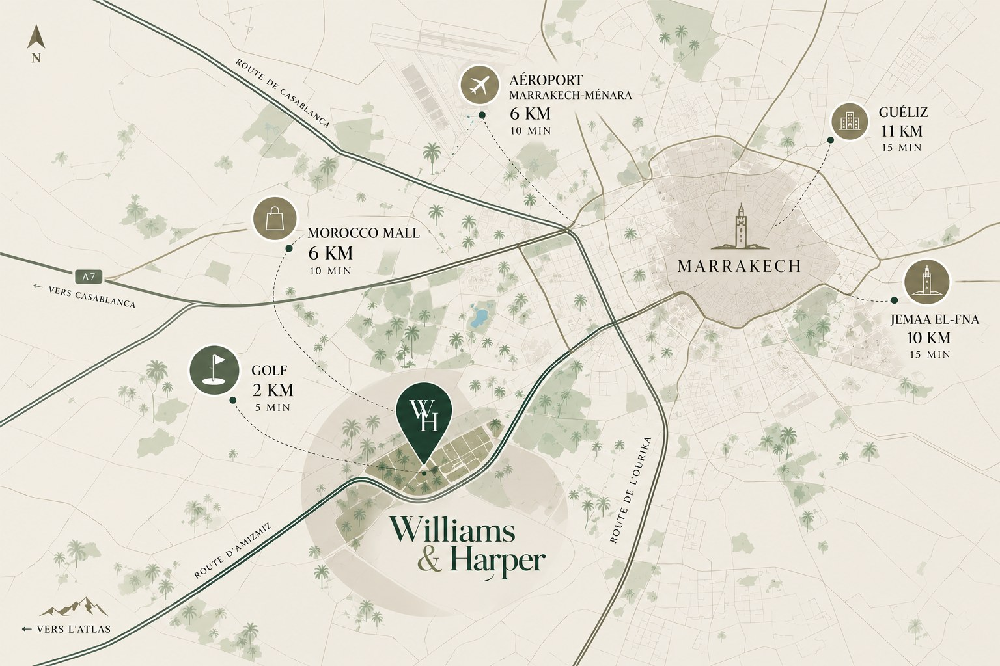

6 km
Luchthaven Marrakech-Menara
Zes kilometer, een tiental minuten: het domein is het eerste adres van Marrakech na de landing.
À six kilomètres de l'aéroport et treize de Guéliz, sur la route de l'Ourika, face au Haut Atlas.

Zes kilometer, een tiental minuten: het domein is het eerste adres van Marrakech na de landing.

De levendigste wijk van Marrakech, met haar cafés, galeries en boetieks, op dertien kilometer.

Als eeuwenoud juweel, opgericht in de 12e eeuw, betovert de Koutoubia de skyline van de rode stad met haar minaret van 77 meter. Aan haar voet ligt het plein Jemaa el-Fna, werelderfgoed.

De exotische schoonheid van de Jardin Majorelle, een botanische symfonie te midden van de stedelijke drukte.

Een golfbaan op twee kilometer van het domein, voor bewoners die houden van greens en weidse ruimtes.
Twee uitstapjes op minder dan een uur van het domein.

Een alternatief voor de Sahara: quad, kameeltochten, wandelingen en een nacht in een Berberkamp onder de sterren.

In de omarming van het Atlasgebergte nodigen haar kronkelende wateren, haar Berberdorpen en de watervallen van Setti-Fatma uit tot een uitstap.